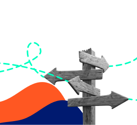
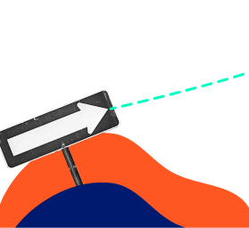

Андрей — предприниматель, хочет перевести бизнес в Европу, и у него уже есть партнеры в Италии. Герой часто бывает в этой стране и берет с собой в путешествие родных.
Абсолютно вся семья влюблена в Италию: ее культуру, кухню, людей и города. Андрей практически свободно parla italiano, и его жена и дочь тоже стали учить язык.
Однажды Андрей хотел сделать своим любимым сюрприз и подарить очередные итальянские выходные, но столкнулся с визовыми ограничениями. Семья не могла в ближайшее время въехать в страну.
Тогда герой задумался о том, как совместить свои бизнес-цели и мечту семьи, как получить свободу и больше возможностей, как вести бизнес в Европе и путешествовать без ограничений.
Тогда герой задумался о том, как совместить свои бизнес-цели и мечту семьи, как получить свободу и больше возможностей, как вести бизнес в Европе и путешествовать без ограничений.
Выберите решение
Стать космополитом
Эмигрировать из родной страны
Будущий космополит договорился о встрече с Immigrant Invest, чтобы найти оптимальное решение.
Андрей и его семья решили получить гражданство одной из стран Евросоюза. Герои хотели свободы, но не планировали переезжать в другую страну.
Команда Immigrant Invest подобрала несколько вариантов получения гражданства с разной суммой необходимых инвестиций.
Мальта стала подходящей страной для героев.
Семья может получить разрешение на постоянное место жительства, при этом героям не нужно действительно проживать в стране. Космополиты смогут ездить в Италию и другие европейские страны когда угодно и оставаться там, на сколько захотят, не переживая о визах и сроках.
Не основной, но одной из причин выбора Мальты стало то, что через 5 лет Андрей сможет вернуть сумму изначальных инвестиций и сохранить статус космополита со всеми его преимуществами.
Immigrant Invest потребовался месяц, чтобы подготовить все необходимые документы и помочь героям осуществить мечту.
Документы заверили у мальтийского консула в Москве, а спустя 6 месяцев проверок семья получила свои карты ПМЖ.
Вместе с мальтийским ПМЖ герои получили свободу, отсутствие границ и статус космополитов. А отпраздновали они это все в любимой Италии, наслаждаясь красотой, кухней, вином и планируя следующую поездку. Семья сможет свободно путешествовать по Европе, а Андрей летает на бизнес-встречи, не думая о визовых ограничениях